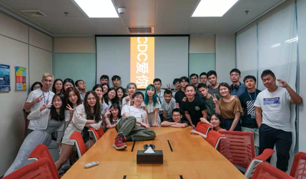
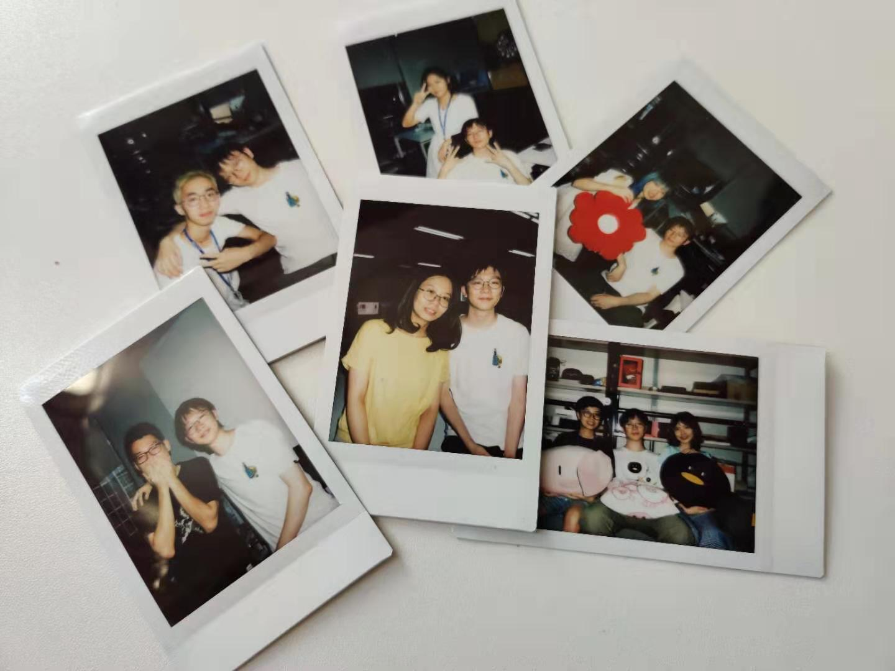
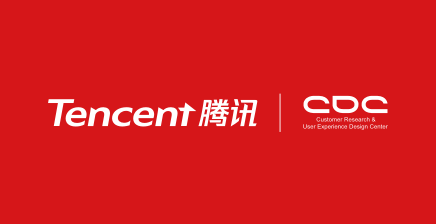
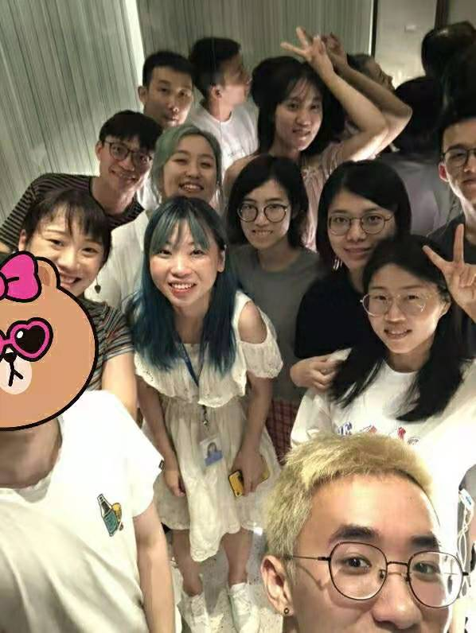

Tencent Internship
During the summer of 2019, I was an Interaction Designer Intern at CDC(Customer Research & User Experience Design Center) of Tencent with a focus on redesign of enterprise-level software and solving the demand from Artificial Intelligent Department.




What did I do
- Redesign of the enterprise-level software use flow and experience
- Redesign of artificial intellegent related website
- Interaction design and early-stage research of questionare
What did I learn
- Importance of communication
- Early stage evaluation and understanding of project/demand
- Enhancement on my professional skills
- Workflow and Designing process in big technology company